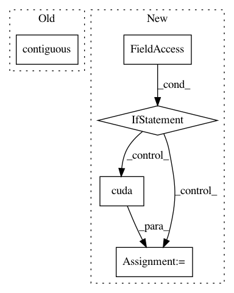

a584d6f73cfafa81c9e872ae6e9beb2feff32574,OpenNMT/onmt/Dataset.py,Dataset,__getitem__,#Dataset#Any#,23
Before Change
return Variable(out)
def __getitem__(self, index):
srcBatch = self._batchify(
self.src[index*self.batchSize:(index+1)*self.batchSize]).t().contiguous()
tgtBatch = self._batchify(
self.tgt[index*self.batchSize:(index+1)*self.batchSize]).t().contiguous()
return srcBatch, tgtBatch
After Change
tgtBatch = self._batchify(
self.tgt[index*self.batchSize:(index+1)*self.batchSize])
if self.cuda:
srcBatch = srcBatch.cuda()
tgtBatch = tgtBatch.cuda()
// FIXME
srcBatch = srcBatch.t().contiguous()
tgtBatch = tgtBatch.t().contiguous()
return srcBatch, tgtBatch
In pattern: SUPERPATTERN
Frequency: 3
Non-data size: 5
Instances
Project Name: OpenNMT/OpenNMT-py
Commit Name: a584d6f73cfafa81c9e872ae6e9beb2feff32574
Time: 2016-12-28
Author: alerer@fb.com
File Name: OpenNMT/onmt/Dataset.py
Class Name: Dataset
Method Name: __getitem__
Project Name: dpressel/mead-baseline
Commit Name: f7afc7ae76ed2c328ed02f05e91ccceec8942e0b
Time: 2018-09-26
Author: dpressel@gmail.com
File Name: python/baseline/pytorch/seq2seq/model.py
Class Name: Seq2SeqModel
Method Name: make_input